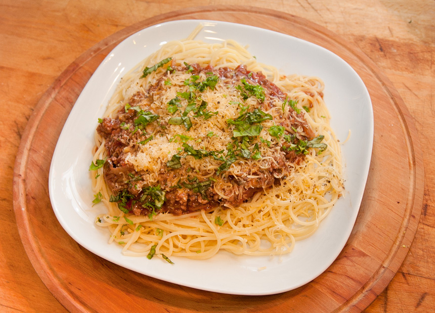

Wilhelms' Delicious Bolognese Recipe
Home

This recipe's origin is from an italian cook book I found in the pantry as a child and dates back to the 1980's
I have fine tuned this recipe over many years, adding a few extra ingredients here and there to make it more tasty
It is should be more than enough te feed 6 people, please feel free to make it your own
Ingrediets
- 2 Large Chopped Onions
3 Stalks of Celery Diced
- 3 Large Carriots Sliced Julliene or Grated
1 ½ Cup of Red Wine
- 500g of Minced Beef
- 500g of Minced Pork
- 4 Cans of Chopped Italian Tomatoes
- 1 litre/500ml of Italian Passata
- 1/2 a Table Spoon of brown/white sugar
- 2 Heaped Table Spoons of Italian Herbs
- 1 Table Spoon of Ground Black Pepper
- 1 to 2 Table Spoons of Sea Salt(do a taste test to add more/less)
- 5 Table Spoons Extra Virgin Olive Oil